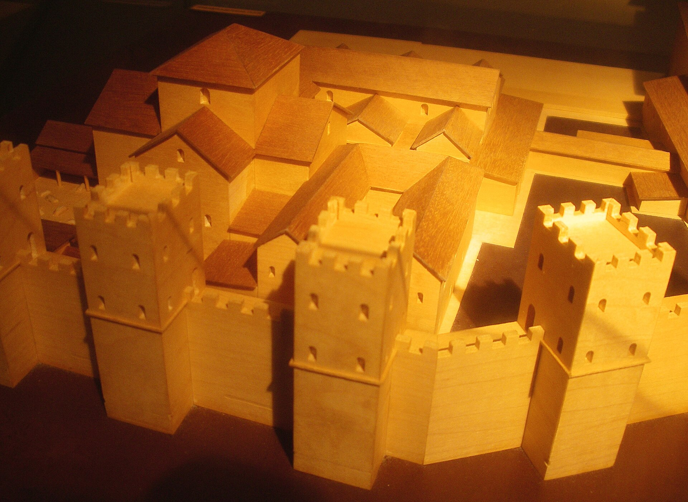
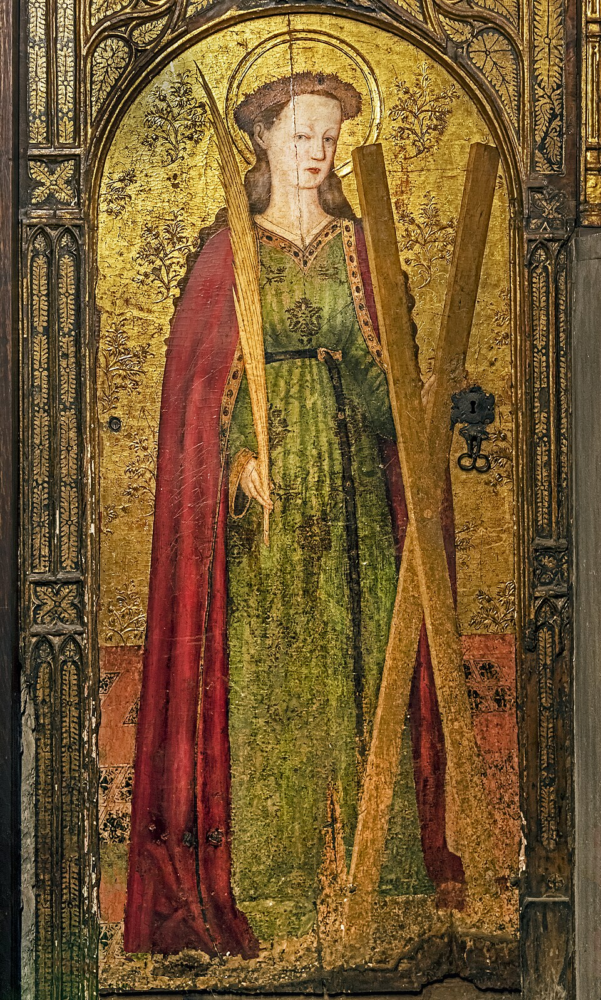
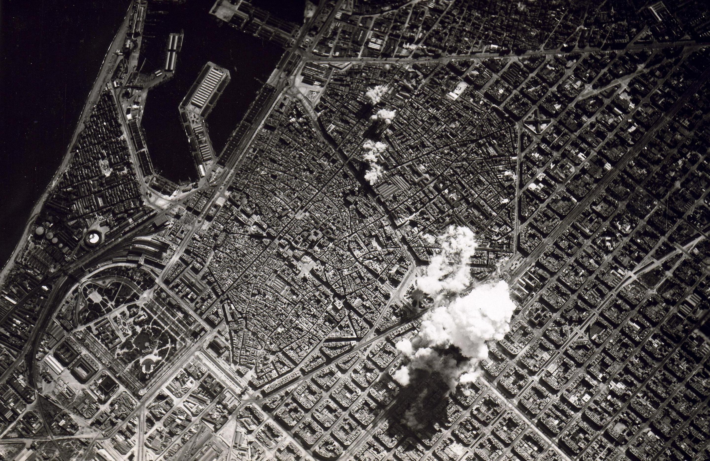
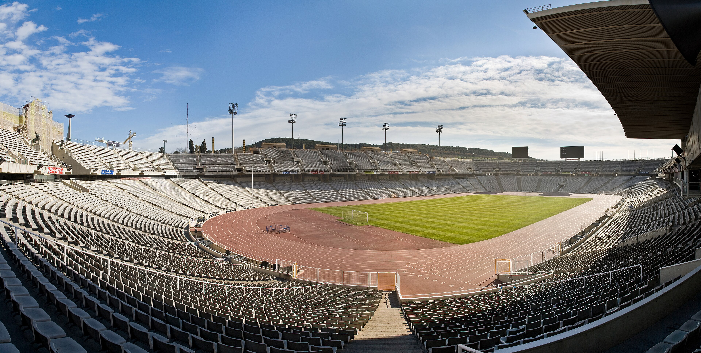

Geschichte von Barcelona
Barcelona hat eine Geschichte von über 2000 Jahren. Hier die wichtigsten Stationen.
Römische Zeit
Die Römer gründeten im 1. Jahrhundert v. Chr. die Kolonie Barcino. Reste der Stadtmauer und des Tempels des Augustus sind heute noch im Gotischen Viertel zu sehen.

Mittelalter
Im Mittelalter wurde Barcelona Hauptstadt der Grafschaft Barcelona und später zu einer wichtigen Handelsmacht im Mittelmeer. Aus dieser Zeit stammen die Kathedrale und das Gotische Viertel.

19. Jahrhundert und Modernisme
Im 19. Jahrhundert wuchs die Stadt stark, die Stadtmauern wurden abgerissen und das Viertel Eixample entstand. Architekten wie Antoni Gaudí prägten den katalanischen Modernisme.
Spanischer Bürgerkrieg
Im Spanischen Bürgerkrieg (1936–1939) wurde Barcelona 1938 aus der Luft schwer bombardiert. Danach folgte die Franco-Diktatur, bis Katalonien wieder autonom wurde.

Olympische Spiele 1992
1992 fanden die Olympischen Sommerspiele in Barcelona statt. Sie veränderten die Stadt stark und öffneten sie zum Meer hin.
